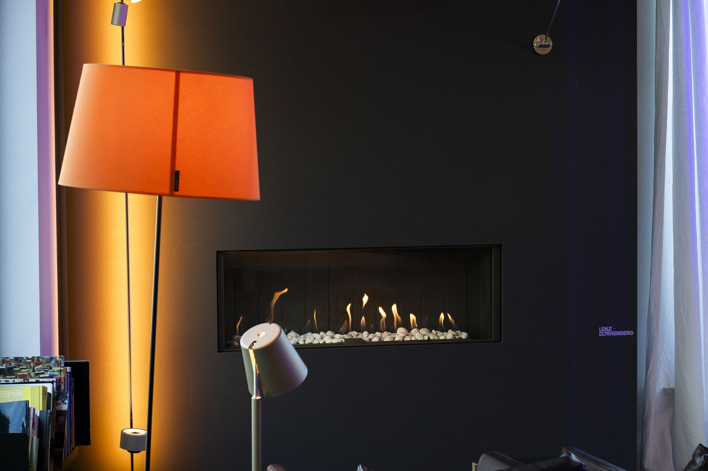
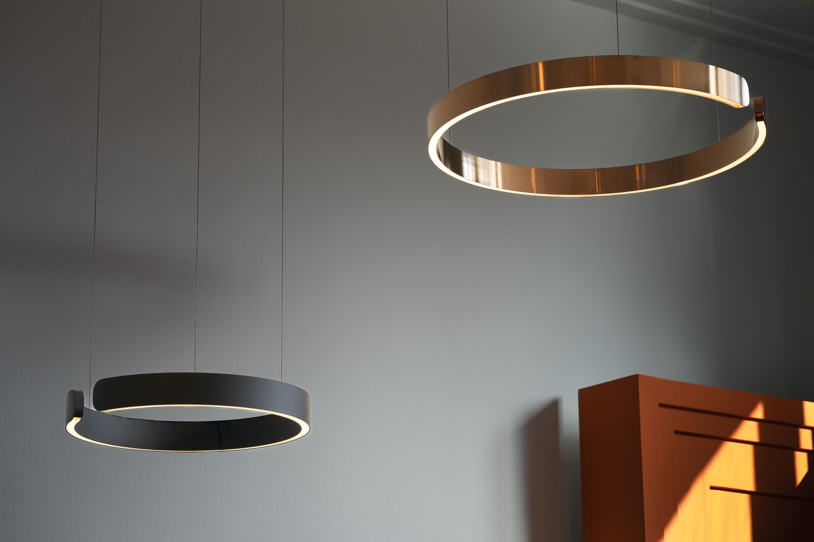
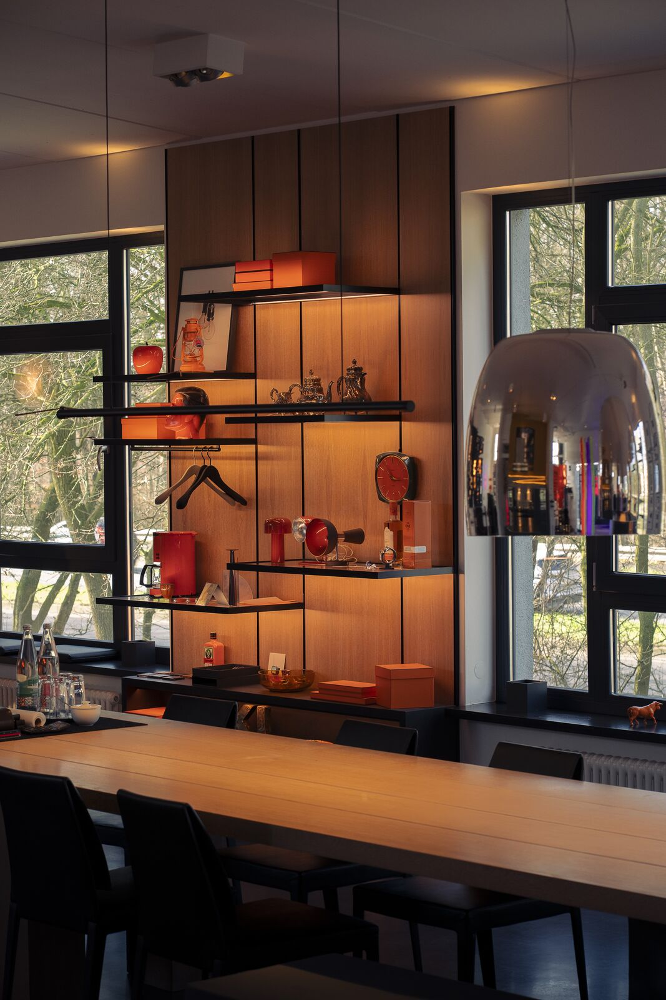
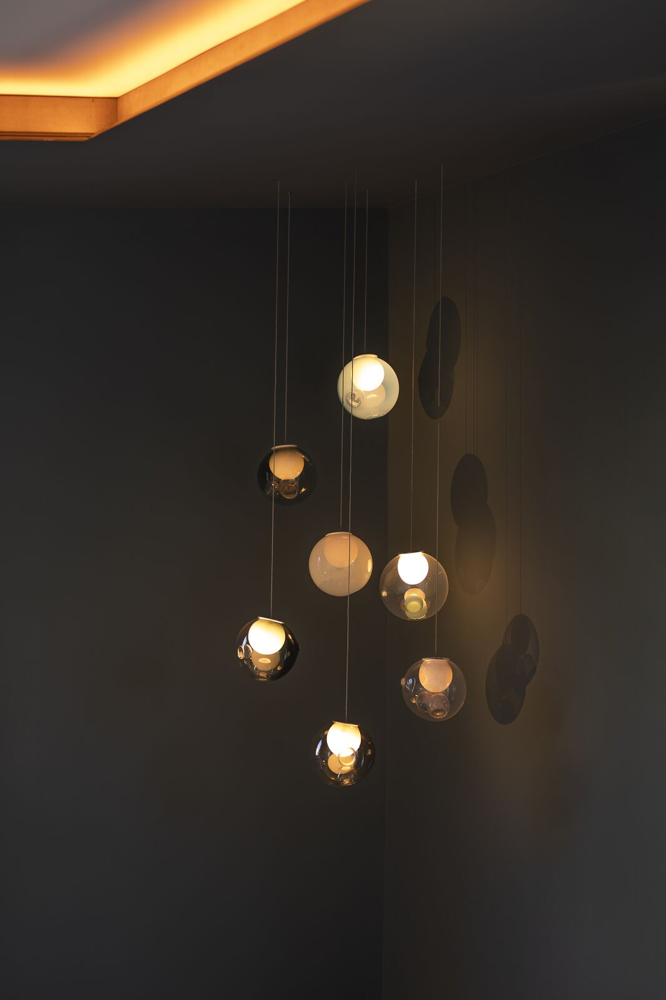
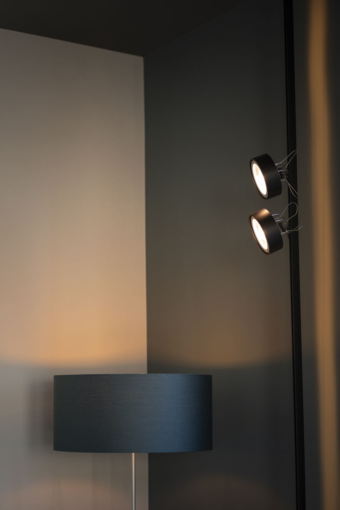
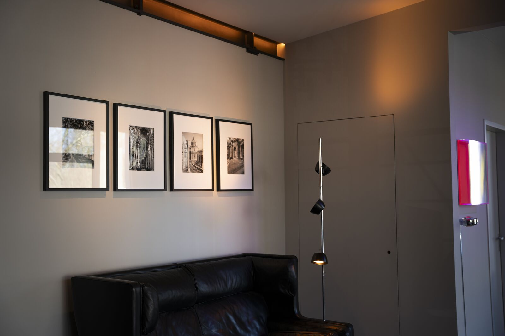
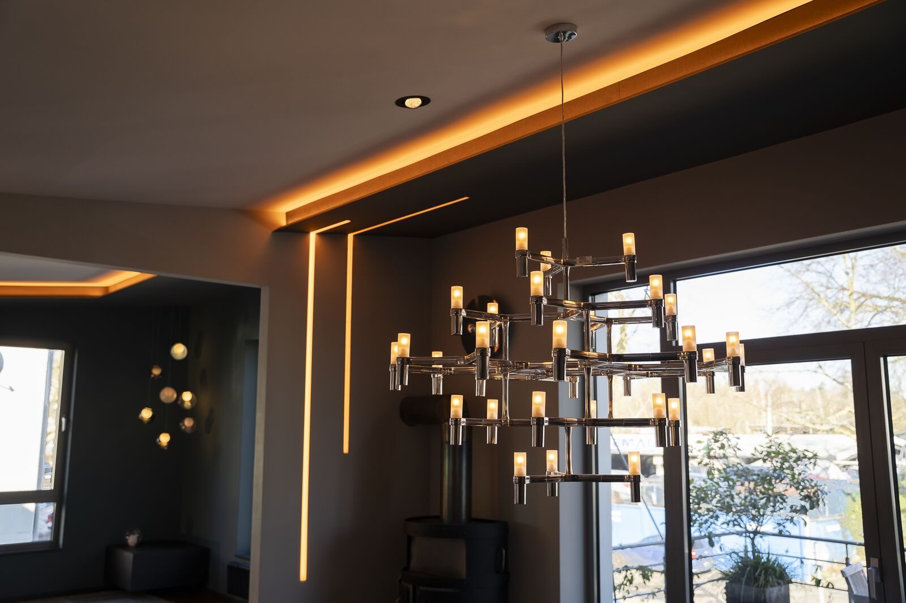
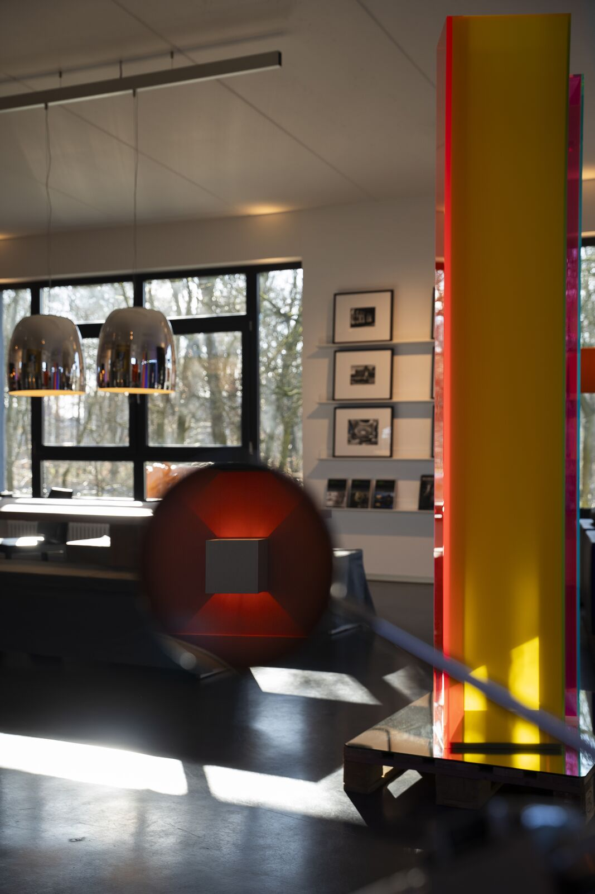

Kunstlicht
Kunstlicht ist ein Unternehmen für Lichtplanung und Beleuchtung der Extraklasse. Vor Ort entstand die Gelegenheit, Einblick in die Welt des Lichts zu nehmen und die exklusive Ausstellung fotografisch zu begleiten.







